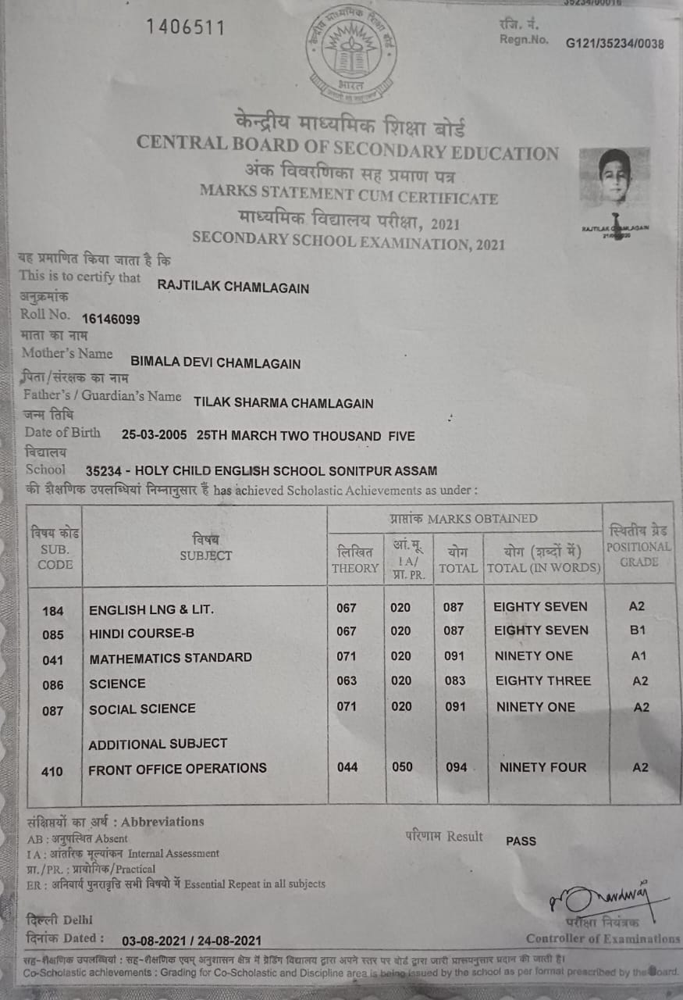
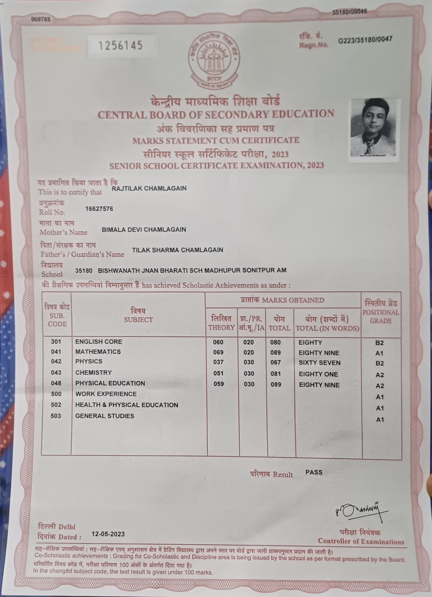

Academics
My educational background, from school marksheets to engineering semesters.
High School (Class 10)
Foundation of my academic journey with strong fundamentals in Science and Mathematics.

Class 10 Marksheet & Cert
CBSE - 2021
Higher Secondary (Class 12)
Specialized in the Science stream, paving the way for my B.Tech in Computer Science & Engineering.

Class 12 Marksheet & Cert
CBSE - 2023
B.Tech Computer Science (2024-2028)
Currently pursuing B.Tech in CSE at Barak Valley Engineering College. Semester results will be updated here.